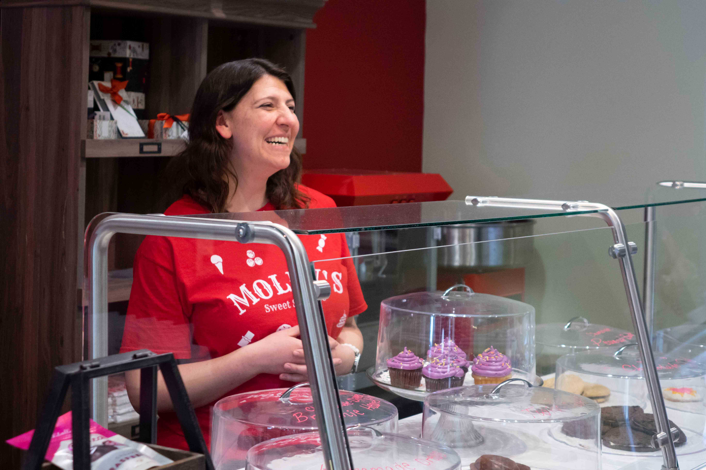

In 2008, the small city of Hamilton was filled with empty storefronts. Those once deserted buildings are now home to the Missouri Star Quilt Company, a local business that sells fabric for quilt making. The company also creates online quilting tutorials. Sarah Galbraith is one of the founders of the popular business and has witnessed the company and community grow over the last decade.
Tina Tan
Quilting and tourism derived from it are economic linchpins in Hamilton, home of the Missouri Star Quilt Co. But the COVID-19 pandemic has been a blow to that tourism. | Tina Tan/Missouri Business Alert
Patchwork of small businesses enjoys steady rise, faces uncertain future in ‘Quilt Town, USA’
By Tina Tan, Erin Davis and Jack Anstine / May 13, 2020
Once known as the boyhood home of James Cash “J.C.” Penney, the late founder of the now-troubled retail empire, Hamilton may be better known today as a destination for quilters from all over the world. On the thread of quilting and tourism, the northwest Missouri town has seen the number of local small businesses rise over the last decade.
Hamilton, which some have dubbed “Quilt Town, USA,” welcomed over 100,000 tourists last year, according to the local chamber of commerce. For the majority of visitors, the first stop of the trip is the Missouri Star Quilt Co., a fabric retailer that owns 13 themed shops along the town’s main street.
Tourism keeps the small businesses in town alive during busy seasons. Usually, it’s easy to spot a tour bus on the street or in front of the quilting retreat center.

The Missouri Star Quilt Company runs 13 themed shops in Hamilton. Missouri Star co-founder Sarah Galbraith said the variety of the stores gives visitors to town “a palate cleanser.” | Tina Tan/Missouri Business Alert
However, during the COVID-19 pandemic, tourism in Hamilton has halted.
According to Bob Hughes, vice president of the Hamilton Chamber of Commerce, all of Missouri Star’s quilt shops and most businesses in town temporarily closed in response to the pandemic. While some businesses in town began to reopen to the public after Gov. Mike Parson’s statewide stay-at-home order was lifted, Missouri Star’s retail storefronts remained shuttered. To meet increased online demand, Missouri Star has continued running its warehouse under additional safety precautions and asked other employees to work from home.
Hitching their wagons to Missouri Star
The Doan family, founders of Missouri Star, started off making quilting tutorials on YouTube and opened their first store in Hamilton in 2008. A National Small Business Award winner in 2015, Missouri Star is widely known by quilters nationally and internationally.
“All of a sudden, you're seeing people come by to visit because they enjoy quilting, for example, and that's the big draw there,” said Alan Spell, a University of Missouri Extension professor.
Missouri Star had more than 650,000 YouTube subscribers as of early May. The company’s annual revenue reached $40 million in 2018, according to Forbes.
Not only quilters, but also entrepreneurs, are drawn to this rural community of around 1,800 people. In 2019 alone, the Chamber of Commerce had 10 ribbon cuttings to celebrate the opening of new businesses.
“There’re just a variety (of businesses),” said Bob Lund, a lifelong Hamilton resident and active chamber member. “Not all of them are related to the quilt company, but I think they’re here because of that.”
A mural pays tribute to Hamilton’s history as a stop along The Hannibal and St. Joseph Railroad, the first railroad to cross Missouri. Today, different industries drive traffic to town.| Tina Tan/Missouri Business Alert
Dakota Redford, a small business owner in Hamilton, is one of the entrepreneurs that came from outside of the community. She and her family run Home Inn Hamilton Bed & Breakfast, Hamilton Hotel Event Center and the Hamilton Quilt Museum. Redford said the growth and success of Missouri Star was what brought her to the city in 2015.
“My business wouldn't exist, at least to the volume that it does, if it wasn't for the quilt shops that are in town,” she said.
Formerly the owner of a vinyl lettering online business, Redford had a lifelong dream of starting a bed and breakfast.
“I moved to Hamilton specifically to run (a) business here,” Redford said.
Originally from Utah, the Redfords purchased a 15-acre property in 2015 they later converted into the Home Inn Hamilton Bed & Breakfast.
“My guests at the bed and breakfast are quilters, and they come to town specifically to come to the quilt shops,” Redford said. “When they do have an event that is held by Missouri Star, or if there is a retreat, I have every bed full.”
In 2018, Redford opened her second local business, Hamilton Hotel Event Center — a 7,200-square-foot event hall that features space for large groups to sew together and also offers guest suites.
“We looked at the buses coming into town with no place to stay and we were sending them to outside community,” she said. “To help the economy here in Hamilton, we made those buses stay here.”
Since 2016, Redford has seen about 30% revenue growth each year because of the traffic to the community.
Similarly, the gross income of Dawson Retreats, a vacation home rental company, grew by about 9% from 2016 to 2019. Owner Anastasia Dawson said tourists made up over 90% of her company’s customer base.
The Dawsons started running their first nightly rental house, The Cottage, in 2016. Each year after that, they added one additional house in both 2017 and 2018, and they now own three properties.
“Part of Hamilton’s market that’s unique is that it’s a brand new market,” Dawson said. “There weren’t a lot of established businesses.”
Supporting and growing small businesses
Now the biggest employer in Hamilton, Missouri Star employed around 400 people as of late February, with half of them living in and around the city.
“Before (the company started), the only people that really lived in Hamilton were people that worked at maybe like the prison or worked in the city that wanted to live in a small town,” Hamilton City Administrator Jean Van Iperen said.
For small business owners, relying on a company like Missouri Star to drive traffic is what Spell called “a good problem to have.”
“I don’t see any downsides of it,” Spell said. “Usually, the economy starts out with a handful of strong businesses, and then they get bigger and bigger as populations grow, and more and more diverse industries will get in there.”
Of course, Missouri Star is not the only company helping boost other businesses in town. In Hamilton, small businesses collaborate through organizations like the Chamber of Commerce and Hamilton Community Alliance to promote their community as a whole.
“We all work together and share our customer base with one another,” Redford said. “And that does make a big difference.”

Molly Farnsworth, co-owner of Molly’s Sweet Shoppe, talks with customers at her store in February, before the implementation of COVID-19 precautions. Farnsworth her husband, Jacob, supply samples of their confections for quilting retreat events. | Tina Tan/Missouri Business Alert
Dawson, who is also the treasurer of Hamilton Community Alliance, said they work to grow Hamilton as a team instead of competing as individual businesses.
“A community that recognizes their support, their social infrastructure, their social bonds they build with a situation like this are very important for long-term health (of the economy),” Spell said.
‘Trying to find a way’
Like the rest of the global economy, Hamilton has been hit hard by COVID-19. While Missouri Star continues to ship fabric all over the world, small businesses in town have faced challenges with tourism cratering during what is typically a busy season.
“We haven’t had any guests in about a month,” Redford said in mid-April. “Everyone has canceled (their reservations), so we don’t have any reservations on the books for all of April or May, as of right now.”
Dawson said that in a worst-case scenario, many shops in Hamilton would have to close their doors permanently if they can’t bring in enough revenue to get through the next winter, which is usually a slow time for tourism in the town.
For now, the Chamber of Commerce and the Hamilton Community Alliance have partnered to develop a program that aims to take care of immediate needs, ensure the survival of area businesses and implement a long-term recovery plan.
“We are definitely hurting,” Hughes said in an email, “but have a plan to survive.”
Small business owners like Redford are staying positive about the unity of their community while trying to keep business running until conditions improve. But many, including Dawson, are waiting to see how Hamilton’s economy will respond in the coming months.
“I honestly don’t know (about the immediate future),” Dawson said in an email. “We’ve never faced anything like this before. … We’re looking at trying to find a way to float the business till spring of next year.”